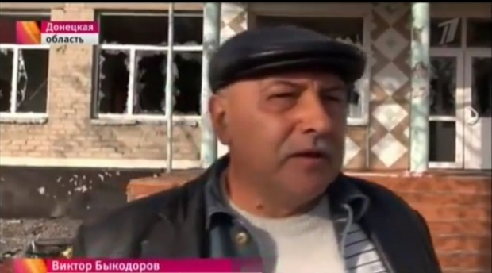
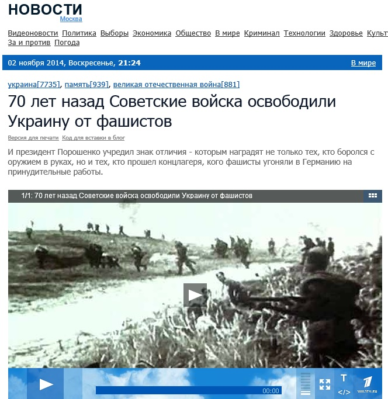

Фейк: Украинским военным обещают «кусочек земли и два раба»
Каждому украинскому солдату, который воюет на Донбассе, пообещали там участок земли и два раба.Такое утверждение прозвучало в сюжете российского Первого канала от 2 ноября.Никаких доказательств правдивости этого утверждения нет.

Телеканал в качестве единственного доказательства приводит «мозаику из обрывков разговоров украинских солдат».

«Сложив мозаику из обрывков разговоров украинских солдат, они (жители Донбасса — ред.)ужаснулись той участи, которая, возможно, была им уготована», — говорит диктор за кадром.Далее «председатель сельской общины» Виктор Быкодоров (по-видимому, самопровозглашенный председатель, так как предыдущий глава сельсовета Владимир Коновалов сбежал) рассказывает о том, как в село Степановка Донецкой области якобы вошли украинские войска и согнали всех жителей в одном месте.Потом заявили: «Скажите спасибо, что вас не поубивали – была команда всех уничтожить!».На вопрос: «За что вы воюете на нашей земле», прозвучал ответ: «Нам пообіцяли клаптик землі і два раба», — рассказывает он далее.
Не предоставив ни одного доказательства обещаниям выдавать по два раба на человека, телеканал комментирует это утверждение как доказанный факт.Сразу после слов Быкодорова на экране появляются черно-белые кадры событий Второй мировой войны, сопровождаемые словами диктора: «Получается, что Степановку миновала участь Хатыни.А сколько ещё донбасских сёл и деревень должны были быть стёрты с лица земли, но планам карателей помешало наступление ополченцев».
Напомним, что село Степановка Шахтерского района Донецкой области было разрушено 11 августа этого года огнем из «Градов» боевиков так называемой ДНР.Там не осталось ни одного целого дома, большинство жителей выехали.В селе на тот момент базировались солдаты Вооруженных сил Украины из Житомирской из Ровенской области.«Солдаты говорили, что воевать не хотят.Все из села, никто не говорил, что городской.Очень хорошие ребята», — рассказывали о них местные жители.
Однако журналисты Первого канала абсолютно бездоказательно ассоциируют украинцев с фашистами на уровне терминов, закладывая тем самым в голову телезрителя заведомо негативное отношение к ним.Откуда журналистам Первого канала стали известны планы «карателей», также не упоминается.Как не упоминается и то, что именно «ополченцы» стерли этот поселок с лица земли.
«И обещанные участки земли с рабами, о которых ещё Гитлер говорил немецким солдатам, и фашистская символика на касках красноречиво указывают, чьими последователями себя считают боевики так называемой нацгвардии», — сообщает автор сюжета.
Кадр с фашистской символикой на каске не является доказательством наличия таковых у регулярной украинской армии, так как в данном случае не имеет никаких признаков места съемки.
Словосочетание «Боевики так называемой нацгвардии» также не соответствует действительности.Нацгвардия — часть государственной армии страны, которая имеет законное право принимать участие в боевых действиях.«Боевиками» же принято называть незаконные вооруженные формирования.
Московский блогер Виктор Кадочников в связи с этим вспоминает известные высказывания Геббельса: «Чтобы в ложь поверили, она должна быть ужасающей» и «Мы добиваемся не правды, а эффекта».
Posted On: 2014-11-02T21:00:00
Content Date: 2014-11-02
Download Date: 2021-07-16
Document ID: L0C04FHX7